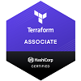
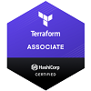

Andrius Zemaitis
I am enthusiastic, self-starting and quick learning with a wide range of hands-on experience in AWS, GCP, Terraform and other environments. I am particularly interested in exploring the area of cloud computing and have self-studied to achieve 2 cloud certificates and IaC certificate. I am looking for opportunities that will build my experience and allow me to transfer my skills from more traditional environments to the cloud. I am passionate, adaptable, enjoy problem solving and set high standards for myself both professionally and personally.
 

- Great experience with Cloud infrastructure of AWS and AMI virtual machines installations on Elastic Compute Cloud (EC2).
- Experienced in creating and maintaining AWS User Accounts, Security Groups, VPC, Route53, RDS, SNS, and AWS storage services like S3, EBS.
- Experienced in cloud provisioning tools such as Terraform and CloudFormation.
- Hands on experience in container-based technologies Kubernetes, Docker
- Basic experience in Linux, - understanding the most important and fundamental concepts of Linux server, working with shell, package management, networking, storage in Linux, service management with systemd, security and file permissions
- Basic skill in Python and Git